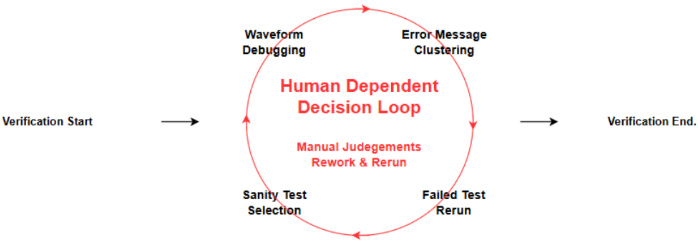
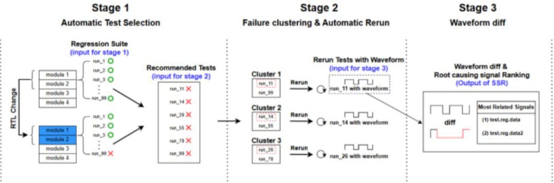
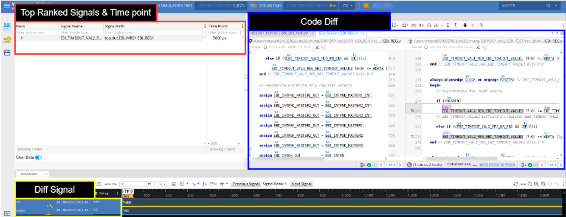
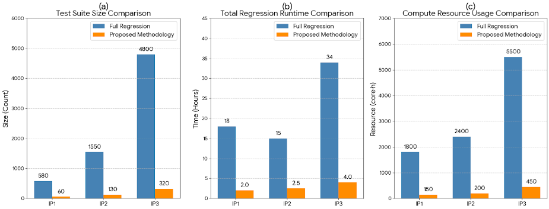
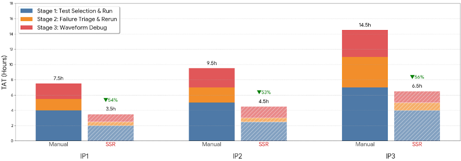

一种新型快速回归：AI/ML 驱动的自动化 Sanity 回归流程
针对 SoC/IP 验证中传统 sanity 回归依赖人工测试选择、日志 triage 与波形分析，导致反馈延迟、结果因人而异的问题，Samsung 与 Cadence 提出 Smart Sanity Regression（SSR）端到端编排流程。SSR 的创新不在新 AI 算法，而在编排层：以 RTL 变更前的 golden session 为基线，单命令串联 Verisium AutoFocus/CodeMiner 的变更感知测试选择、AutoTriage 的 ML 失败聚类与代表性 rerun、WaveMiner 的 golden 波形对比与根因信号排序，各阶段通过标准化数据交接自动衔接。在三个量产 IP 环境中，SSR 将执行测试压缩至全量回归的 7-10%，回归 runtime 最高降低 89%，计算资源节省 91-92%，TAT 降低约 54-56%，同时所有修改模块保持 100% 功能覆盖。失败聚类使冗余 rerun 减少约 90%，根因信号进入 top-3 推荐的比例为 50-87%。核心结论是：AI 在工业验证中的价值主要来自与真实工程实践对齐的工作流级编排，而非孤立的工具自动化。
传统 sanity 回归在测试选择、失败 triage 与波形分析各阶段高度依赖人工（论文环境中每次迭代消耗 4-8 工程师小时），结果不一致且易出错；全量回归虽是最终 closure 必需，但每个回归周期需一天到一周、执行数百至数千条测试，算力与 license 成本高，不适合频繁 RTL 更新后的快速反馈；现有 EDA 工具（变更感知选测试、失败聚类、波形挖掘）彼此独立运行，需要人工协调执行顺序、数据交接、rerun 策略与 debug 流程，碎片化限制了自动化收益。
SSR 是一个分阶段统一编排框架：用户指定 RTL 变更前执行的 golden session 作为一致基线，通过单命令 srun <prj> -ssr=<golden_session_name> 启动全流程。Stage 1 用 Verisium CodeMiner 识别功能代码变更，Verisium AutoFocus 基于测试级覆盖率数据与测试场景生成变更感知的精简测试集；Stage 2 用 Verisium AutoTriage（无监督聚类+有监督分类的混合 ML 引擎）对失败日志按语义相似度聚类，每簇选一个代表测试（最短运行时间或首次出现）开启波形 dump rerun，编排层自动从 golden RTL 快照生成参考波形并对齐仿真选项、随机种子与 dump 配置；Stage 3 用 Verisium WaveMiner 对比失败波形与 golden 波形的信号跳变与行为偏差，挖掘并排序与失败最相关的信号与时点，在 Verisium Debug GUI 中呈现引导式 debug。编排层集中管理执行顺序、标准化目录结构与 vsif 兼容数据交接，各阶段以完成信号触发下一阶段，运行数据存入内部数据库支持持续反馈，最终自动生成单份汇总报告。
测试数量：三个 IP 的执行测试从全量回归的数百至数千条压缩到 60-320 条（仅占总数 7-10%），削减率分别为 IP1 89%、IP2 92%、IP3 93%
回归 runtime：三个 IP 均降低 80% 以上，平均 2-4 小时内完成；IP1 从 18 小时降至 2 小时，IP3 降低 88%
计算资源：三个 IP 均降低 90% 以上；IP3 全量回归需 5,500+ core-hours，SSR 仅需 450 core-hours
功能覆盖：所有评估 IP 的全部修改模块达到 100% 功能覆盖，与全量回归结果一致
测试相关性：预定义 sanity 套件仅覆盖实际受影响模块的 10-40%，SSR 达到 100% 测试相关性；IP1/IP3 中 SSR 选出 320 条测试（多于预定义的 200 条），修正了人工流程未能覆盖 95% 修改逻辑的欠测
失败聚类：数十至数百条失败测试压缩为 5（IP1）/8（IP2）/15（IP3）个语义簇，冗余 rerun 减少约 90%，triage 时间从数小时人工查日志缩短到每簇数分钟
信号排序：根因信号进入 top-3 推荐的比例为 50-87%
TAT：相比人工 sanity 流程平均降低约 55%（摘要称 56%，结论称 54%），其中 Stage 2 失败 triage 阶段改进约 66%
基线数据：人工 sanity 回归每次迭代消耗 4-8 工程师小时；部署后多数 sanity 迭代可在单个工作日内完成
主要区别不在引入新 AI 算法，而在工作流级编排：构建一个编码验证意图、执行策略与跨阶段数据连续性的编排层，将变更影响分析、智能测试选择、失败 triage、rerun 编排与波形根因分析系统性地连接为可重复、不依赖工程师经验的方法学，而非孤立工具的拼凑。此外，SSR 是与 Cadence Verisium 工程团队在工具活跃开发期间深度协作构建的，多个 IP 项目的量产需求被持续反映到工具接口与自动化边界中，保证了大规模工业环境的可操作性。
相关度级别：high
命中能力域：2.4 设计验证方法学 | 2.6 仿真性能与加速器 | 2.7 EDA/验证自动化与 AI 辅助
理由：论文直接命中 2.4（回归与 CI、bug triage 与 debug 方法学）与 2.7（验证流程自动化、AI 辅助验证），并在 2.6 的大规模回归与 ML 辅助验证空间缩减上有量化收益（回归空间压缩约 10 倍、算力节省 90% 以上）。团队交付 LPDDR/HBM/UCIe 等存储与互连 IP，RTL 频繁迭代后的 sanity 回归、失败 triage 与波形 debug 是日常高频工程场景，论文中人工 sanity 每迭代 4-8 工程师小时的痛点与团队实际情况高度吻合；其'编排层优先于单点 AI 工具'的核心结论，对团队沉淀可复用验证自动化方法学具有直接指导意义。
建议动作：深入精读并做内部分享
Joonho Chung 1, Daeseo Cha 2, Woojoo Space Kim 3, Youngsik Kim 4, Seonil Brian Choi 5, Nili Segal 6
三星电子有限公司，韩国首尔（1 june26.chung; 2 dscha; 3 space.kim; 4 ys31.kim; 5 seonilb.choi@samsung.com）
Cadence Design Systems，以色列（6 segal@cadence.com）
摘要 - 片上系统（SoC）验证中传统的健全性回归测试受限于人工测试选择和劳动密集型的波形分析，导致频繁的寄存器传输级（RTL）更新之后反馈延迟。尽管全量回归测试对于最终收敛仍然必不可少，但其漫长的周转时间（TAT）和高昂的计算成本降低了其在活跃开发阶段的实用性。本文提出智能健全性回归（Smart Sanity Regression, SSR），这是一种经过编排的人工智能/机器学习（AI/ML）驱动方法学，将彼此孤立的验证自动化能力整合为单一的端到端健全性回归工作流。SSR 强调的是工作流级别的编排而非单个 AI 技术，在一致的执行与数据交接框架下统一了变更影响分析、智能测试集优化、失败分诊以及基于波形的根因分析。应用于三个量产 IP 验证环境后，SSR 实现了高达 89% 的回归运行时间缩减、92% 的计算资源节省以及 56% 的 TAT 缩减，同时保持了同等的功能覆盖率。这些结果表明，AI 在工业验证中的有效性主要源于与实际工程实践相契合的连贯工作流集成。
随着片上系统（SoC）设计在规模和复杂度上持续增长，在紧张的开发周期下保持设计质量越来越需要先进的验证技术 [1]。在 RTL（寄存器传输级）更新之后，通常会例行执行大规模回归测试套件；尽管完整回归对于最终验证收敛仍然不可或缺，但其漫长的周转时间（TAT）和高昂的计算成本使其难以高效应对频繁的设计变更 [2]。健全性回归（sanity regression）通过执行一个精简、高价值的测试子集来提供快速的功能反馈，从而应对这一挑战 [3]。然而，传统的健全性回归流程仍然严重依赖人工启发式方法和工程师直觉，限制了可扩展性和一致性。传统健全性回归的主要瓶颈来自判断密集型任务，例如选择与 RTL 变更精确匹配的测试、按根因对大量失败日志进行聚类，以及识别与功能失效相关的波形信号。随着回归规模和设计复杂度的增加，这些任务变得越来越耗时且易出错，直接延长了 TAT。静态脚本和基于规则的启发式方法难以捕捉代码变更与所观察到的失败之间复杂的非线性关系。相比之下，基于 AI/ML（人工智能/机器学习）的技术能够分析高维验证数据——包括源代码变更、仿真日志和波形行为——以识别出人工分析难以规模化发现的关联关系。包括 Cadence Verisium Apps 在内的现代验证平台提供了 AI 驱动的能力，用于变更感知的测试选择、自动化失败聚类以及基于波形的分析，有效解决了健全性回归中的各个痛点 [4]。然而，当作为独立工具使用时，它们仍然需要工程师手动协调执行顺序、数据交接、重跑策略和调试工作流，导致流程碎片化，限制了自动化的整体效果。
本文提出智能健全性回归（Smart Sanity Regression, SSR），这是一种编排式的健全性回归方法学，将现有的基于 AI/ML 的验证能力提升为单一、连贯的工作流。SSR 的新颖之处不在于引入新的 AI 算法，而在于构建了一个编排层，对验证意图、执行策略以及跨阶段数据连续性进行编码。通过系统性地衔接变更影响分析、智能测试选择、失败分诊、重跑编排以及基于波形的根因分析，SSR 将健全性回归转变为一种可重复且不依赖特定工程师的方法学。本工作的一个重要方面在于，SSR 是在工具积极开发期间通过与 Cadence Verisium 工程团队的紧密合作而开发完成的。来自多个 IP 项目的量产驱动需求和真实验证工作流被持续地反映到工具接口与自动化边界之中，从而确保了其在大规模工业环境中的实际可操作性。在应用于多个量产 IP 验证项目后，SSR 在保持被修改模块功能覆盖率的同时，显著缩短了回归周转时间并减少了人工投入，能够在 RTL 变更后立即提供快速且一致的验证反馈。
随着片上系统（System-on-a-Chip, SoC）设计的复杂度持续提升，基于回归的验证已成为确保功能完整性的关键手段。在量产 IP 环境中，每个回归周期可能耗时一天到一周，并执行数百乃至数千条测试，往往消耗大量计算资源和工具许可证 [5]。尽管完整回归对于最终验证收敛不可或缺，但其漫长的运行时间和高昂的计算成本使其难以高效地快速评估频繁的寄存器传输级（RTL）更新所带来的影响 [6],[7]。健全性回归（sanity regression）通过执行一个紧凑且高价值的测试子集来提供早期功能反馈，从而缓解了这一局限。然而在实践中，现有的健全性回归流程仍然严重依赖人工操作，导致效率低下、结果不一致以及对人工的高度依赖。
图 1 展示了传统健全性回归的整体流程及潜在的人为错误。该流程由四个主要阶段组成：测试选择、执行、失败分诊与重跑，以及波形调试。几乎每个阶段都需要人工参与，其中失败分诊和波形分析最为耗费人力。在我们的量产 IP 验证环境中，人工健全性回归每次迭代通常消耗 4 到 8 个工程师小时，具体取决于回归规模和失败模式。其中相当大一部分精力耗费在重复性的日志检查、重跑管理和波形浏览上，而非真正的根因分析。这种对人工的高度依赖不仅拉长了整体周转时间（turnaround time, TAT），还导致不同工程师之间的结果不一致。
传统健全性回归仍存在三个主要问题：
若干 EDA 工具提供了部分自动化功能，例如变更感知的测试选择、失败聚类或波形挖掘。然而，这些工具通常各自独立运行，缺乏跨回归阶段的集成。这种碎片化的结构需要在工具之间进行人工协调，限制了自动化带来的收益，降低了整体验证效率。随着验证环境规模的扩大，这种碎片化成为一大主要瓶颈。这些局限促使业界需要一种统一且自动化的健全性回归方法学，以减少人工依赖、保持验证质量，并提供不受个别工程师经验影响的一致反馈。下一节将介绍所提出的智能健全性回归（Smart Sanity Regression, SSR）框架，该框架通过端到端的基于 AI/ML 的自动化方法来应对这些挑战。

The Smart Sanity Regression (SSR) framework is proposed as a unified staged pipeline that automates sanity regression after RTL updates (A). SSR integrates multiple verification tools and datasets into a single continuous workflow consisting of targeted test selection (B), automated failure clustering with optimized reruns (C), and waveform-based root-cause analysis (D). These stages are connected through standardized data handoffs, enabling automatic propagation of tool outputs without manual intervention. By unifying these stages into a consistent flow, SSR provides rapid and reliable functional feedback on modified design areas while preserving verification quality and significantly reducing turnaround time (TAT). Figure 2 presents a high-level overview of the methodology.
智能健全性回归（SSR）框架被实现为一个集成编排系统，可通过单一命令管理多个验证工具的执行环境和数据流。在传统回归环境中，用户必须手动准备工具专用的输入文件、执行参数、配置文件和运行路径。相比之下，SSR 通过内部 API 从参考黄金会话（golden session）中检索所有必需的执行信息，并自动生成各阶段所需的配置文件和脚本，从而将这一整套设置过程自动化。黄金会话是指在当前 RTL 变更之前执行的用户指定参考回归会话，并用作 SSR 的一致性基线。因此，用户只需一条命令即可启动完整的健全性回归流程，无需手动设置或额外的配置工作。为阐明 SSR 的端到端编排过程，表 1 总结了所提出工作流程所有阶段的控制流与执行情况。一旦启动，SSR 流水线便执行一个紧密耦合的、基于阶段的工作流程，并采用标准化的数据交接。在阶段 1 中，对 RTL 变更进行分析，并生成变更感知的健全性测试集。所生成的产物存储于标准化的目录结构和 vsif 兼容格式中，并由阶段 2 自动消费。在阶段 2 中，回归结果和失败日志在共享工作区内进行聚类，并选出具有代表性的测试进行启用波形的重跑。阶段 3 所需的全部输入——包括测试列表、波形映射、执行参数和配置文件——均由编排层在阶段 2 完成后自动生成。所有阶段均由一个命令级编排层集中管理，该编排层强制保障执行顺序与数据连续性。每个阶段通过显式的完成信号触发下一阶段，而数据交接则在分层工作区结构内进行，以确保各次运行之间的一致性和可复现性。此外，运行时数据会被收集到内部数据库中，以支持持续反馈。后续各节将基于这一集成编排架构对每个阶段进行详细描述。
| Stage | Input | Automated Outcome | Orchestration Role |
|---|---|---|---|
| Stage 1 - Test Selection and Run | RTL diff, coverage, golden session | Change-aware sanity test list | Replaces manual test selection with a consistent, change-driven policy |
| Stage 2 - Failure Triage and rerun | Sanity regression results, failure logs | Representative failed tests with waveforms | Standardizes triage and rerun decisions to minimize redundant runs and waveform overhead |
| Stage 3 - Waveform Debug | Failed and golden waveforms | Ranked root-cause signals | Focuses debug effort by prioritizing signals and time windows most correlated with failures |
| Stage | Input | Automated Outcome | Orchestration Role |

Stage 1 starts with the information of the golden regression session performed before the RTL change. From this baseline, when user runs the command srun <prj> -ssr=<golden_session_name> , the orchestrator automatically identifies the required directories and generates the input files needed to execute SSR. First, using the golden regression session information along with the generated files and directories, Verisium AutoFocus generates compact, focused regressions to validate design changes by leveraging test-specific coverage data and test scenarios associated with functional code changes identified by Verisium CodeMiner. This automatic sanity test suite selection provides low-overhead feedback early on and excludes tests unrelated to the RTL changes, ensuring both reliability and quality of sanity test suite despite the short run-time. After completing sanity test suite selection, the orchestrator configures the directory structure required to pass the Stage 1 output to Stage 2. It then initiates the execution of the selected test suite and ends Stage 1. Throughout Stage 1 execution, the orchestrator is leveraged to ensure that execution is maintained within practical limits of run-time and computational resources.
第 2 阶段在健全性测试套件执行完毕后开始。Verisium Manager 收集所有失败的测试，并解析其日志以提取关键的失败特征，包括错误消息、断言失败（assertion failure）以及仿真时间范围。为了解决传统基于规则的启发式方法的局限性——这类方法难以应对新出现的失败模式，且需要持续维护——SSR 采用了 Verisium AutoTriage，这是一种机器学习（ML）驱动的引擎，利用在结构化回归特征上结合无监督聚类与有监督分类的混合方法。
这一 ML 策略针对回归数据进行了优化，回归数据通常包含重复出现的失败模式与由近期 RTL 变更引入的新型错误的混合。无监督聚类基于日志词元（log token）和错误路径中的语义相似性对失败进行分组，无需预定义标签，从而能够对已知和未见的失败进行归类整理。当有标注数据可用时，有监督分类则利用历史回归结果对失败簇进行优先级排序和排名，提高跨运行的三分（triage）一致性。这些技术相结合，在准确性和可维护性方面均显著优于基于静态正则表达式的方法。
一旦失败被聚类为语义相关的组，SSR 便为每个簇选取一个代表性测试——通常是运行时间最短的用例或首次出现的用例——并在开启波形转储（waveform dumping）的情况下对其进行重跑。这种由策略驱动的重跑策略消除了冗余执行，将仿真量减少约 90%（详见第 IV 节），同时确保每种不同的失败模式都能产生可用于分析的波形。
重跑完成后，SSR 编排层会自动从黄金参考（golden）RTL 快照生成参考波形，并将其与失败测试的波形进行对齐。仿真选项、随机种子和转储配置均被同步以确保可复现性，为第 3 阶段高效开展根因分析准备好黄金参考波形与新波形对比数据。
第 3 阶段首先利用编排层在第 2 阶段生成的代表性失败测试波形。SSR 使用 Verisium WaveMiner 将每条失败波形与在 RTL 更改之前转储的黄金参考波形进行对比。该对比首先检测失败波形与黄金参考波形之间的信号跳变和行为偏差。随后应用签名挖掘（signature mining）来识别并排序与所观察到的失败最相关的信号和时间点。这些排序后的结果连同其波形上下文一起呈现，以便在 Verisium Debug 图形用户界面（GUI）中进行直观的根因分析，如图 3 所示。通过突出显示最相关的信号及其关联波形，系统提供了一组聚焦的潜在调试目标。这种引导式调试流程减少了波形调试所需的人工投入和不必要的分析，并最大限度地减少了人为错误。
在第 3 阶段结束时，SSR 还会将所有生成的数据整理到一个用户友好的结构化目录中，其中每个阶段的输出都存储在统一顶层目录下的专用子文件夹中。此外，每个步骤的关键信息会被自动提取并汇总到一个报告文件中，使用户能够一目了然地回顾整个 SSR 执行过程。该摘要包括诸如推荐测试与完整回归测试套件的比率、总体运行时间、失败测试详情以及相关失败信号信息等指标。
最终，SSR 提供了一个稳定、可重复且资源高效的健全性回归流程，使验证效率和健全性回归的质量均得到最大化。

所提出的智能健全性回归（Smart Sanity Regression, SSR）流程在一个面向移动 SoC 设计中复杂子系统的生产级 IP 验证项目中进行了评估。该项目环境的特点是在开发阶段频繁进行小规模的 RTL 更新，每次变更仅影响数量有限的模块和接口。在这种情况下，每次更新后运行完整回归固然能够检测出功能性错误，但需要大量的计算资源和较长的周转时间（TAT），对于快速设计迭代而言并不切实际。为解决这一低效问题，SSR 被引入作为一种轻量级、由工程师调用的健全性回归流程，能够在完整回归阶段之前实现早期错误检测和功能完整性验证。该方法被应用于三个规模与复杂度各不相同的 IP。对于每个 IP，将 SSR 的结果与两种传统验证方法进行了比较：不带健全性过滤的完整回归流程（A），以及由验证工程师管理的手动健全性回归流程（B）。比较结果将在以下章节中详细讨论。
为了评估所提出的 SSR 流程的效率，在相同的环境下对三个规模与复杂度各不相同的 IP 进行了分析。完整回归在 RTL 更新后执行整个测试套件，而所提出的 SSR 流程则选择性地执行与最近修改的模块相关的测试。图 4 展示了完整回归流程与 SSR 流程在测试套件规模、总运行时间以及计算资源使用方面的对比结果。
在这三个 IP 中，SSR 的变更感知测试选择将所执行的测试套件从完整回归中的数百甚至数千个测试缩减为仅包含 60 至 320 个测试的小型子集，仅占总数的 7%–10%。如图 4(a) 所示，缩减比例如下：IP1 为 89%，IP2 为 92%，IP3 为 93%。这种一致性表明，所提出的选择机制能够随项目规模有效扩展，并在设计规模增长时保持稳定的效率增益。通过将整体回归空间压缩近十倍，同时仍确保所有被修改的设计区域均得到充分执行，SSR 为多样化的 IP 配置实现了资源高效的验证流程。
在全部三个 IP 上，SSR 流程均一致地将回归运行时间缩减了 80% 以上，平均在 2–4 小时内完成。IP1 表现出最大的相对改进，将周转时间从 18 小时缩短至仅 2 小时；而 IP3 尽管测试套件规模大得多，仍实现了类似的 88% 缩减。测试缩减与运行时间改进之间的这种近线性相关性表明，SSR 能够随回归规模有效扩展，并随着项目复杂度的提升提供可预测的运行时间收益。缩短的反馈回路使验证工程师能够在同一开发周期内确认设计完整性，而无需等待完整回归结束，从而大大加速了迭代式 RTL 验证。对运行时间的影响如图 4(b) 所示。
SSR 的选择性执行与优化调度显著降低了总仿真工作量，使回归服务器得到更高效的利用。图 4(c) 展示了三个 IP 上全量回归流程与 SSR 流程的计算资源使用情况对比。如表 3 所总结，SSR 在所有 IP 上均持续地将计算资源使用量降低超过 90%。例如，IP3 进行一次全量回归需要超过 5,500 个核时（core-hours），而使用 SSR 流程仅需 450 个核时。这一降低不仅源于更少的测试执行次数，还得益于消除了冗余的重复运行并将仿真重叠降至最低。此类优化提升了回归集群（regression farm）的可用性并缩短了排队时间，使多项验证活动能够并发运行。在大规模环境中，这意味着切实的基础设施成本节约以及整体项目吞吐量的提升。
尽管测试数量和运行时间大幅减少，SSR 流程在所评估的每个 IP 的所有已修改设计模块上均实现了 100% 的功能覆盖率。覆盖率结果与全量回归的结果完全一致，证实选择性测试执行并未造成任何功能场景的丢失。这表明 SSR 方法论在显著提升效率的同时保持了验证的完整性，验证了其作为活跃开发阶段快速回归前验证流程的适用性。

In the conventional sanity regression flow, engineers performed every step manually - from test selection, log analysis, rerun scheduling, to waveform debugging. SSR automates these steps in a unified flow, providing change-aware test selections, automated failure clustering with optimized reruns, and waveform debugging. The following sections present comparative results between SSR and conventional sanity regression across three production IPs.
在传统流程中，预定义的健全性测试套件往往包含许多与近期寄存器传输级（RTL）修改无关的测试，导致冗余执行和计算资源的浪费。SSR 自动分析修改范围与覆盖率相关性，构建出紧凑的、变更感知的健全性测试套件，其中所有被选中的测试都与被修改的设计直接相关。表2展示了三个 IP 上预定义与自动化测试选择的对比。
如表2所总结，预定义测试套件仅覆盖了实际受 RTL 变更影响模块的 10%–40%，留下了显著的验证缺口。相比之下，SSR 通过自动将测试与被修改区域相关联，在所有 IP 上实现了 100% 的测试相关性。
值得注意的是，在 IP1 和 IP3 等案例中，SSR 选出的测试数量（320）超过了预定义测试套件（200）。这一增长并不代表测试膨胀，而是纠正了人工流程的测试不足——该流程此前未能覆盖 95% 的被修改逻辑。通过填补这些关键的验证空洞，SSR 确保每个被执行的测试都切实有助于实际的设计完整性，这与那些规模虽可能更小、功能上却不完整的静态列表不同。
| IP | Predefined Tests | Tests Related to Modification | SSR Tests | Relation to modification |
|---|---|---|---|---|
| IP1 | 50 | 10 (20%) | 60 | 100% |
| IP2 | 150 | 15 (10%) | 130 | 100% |
| IP3 | 200 | 10 (5%) | 320 | 100% |
| IP | Predefined Tests | Tests Related to Modification | SSR Tests | Relation to modification |
手动健全性回归（sanity regression）需要工程师逐一审查每个失败的测试，这一过程耗时数小时且容易出现人为错误。SSR 通过对具有相似日志特征的失败测试进行聚类，并对每个簇仅执行一次代表性重跑，实现了该流程的自动化。表 3 总结了三个 IP 中失败测试的数量及由此形成的簇。在所有 IP 中，SSR 将数十甚至数百个失败测试浓缩为少量语义簇——IP1 为 5 个，IP2 为 8 个，IP3 为 15 个——从而将冗余重跑减少了约 90%。这一自动化将分诊时间从数小时的人工日志检查缩短至每个簇仅需几分钟，使工程师能够专注于不同的失败类别，而非重复性的错误分析。
| 0 | 1 | 2 | 3 |
|---|---|---|---|
| IP | Failed Tests/Total (%) | Clusters Generated | Reduction in Reruns |
| IP1 | 40/60 (67%) | 5 | 88% |
| IP2 | 90/130 (69%) | 8 | 91% |
| IP3 | 200/320 (63%) | 15 | 92% |
| 0 | 1 | 2 | 3 |
在第 3 阶段，SSR 对每个簇中的一个代表性测试执行基于波形的比较，以检测其相对于黄金参考的波形变化。随后，根据信号与检测到的异常之间的相关性对信号进行排序，从而提供按优先级排列的调试目标。表 4 展示了三个 IP 中根因信号的排序准确率。如表 4 所示，在 50 - 87 % 的情况下，信号排序将根因信号识别于前三个推荐之内。这种相关性指导与验证工程师的分析高度吻合。SSR 通过引导工程师直接定位到相关波形区间和关键信号，有效缩短了平均调试时间。
| IP | Clusters Analyzed | Average Rank of True Root Signal | Top-3 Accuracy |
|---|---|---|---|
| IP1 | 5 | 3.5 | 60% |
| IP2 | 8 | 4.7 | 50% |
| IP3 | 15 | 2.4 | 87% |
| IP | Clusters Analyzed | Average Rank of True Root Signal | Top-3 Accuracy |
为了衡量周转时间（TAT）的整体改进幅度，我们在全部三个 IP 上对手动健全性回归流程与自动化健全性回归流程进行了比较。手动流程各阶段的耗时依据工程师的执行日志进行计时，而 SSR 的耗时则从回归调度器中自动采集。图 5 展示了各 IP 每个阶段总执行时间的对比。在所有 IP 上，SSR 始终将总 TAT 相比手动流程缩短了一半，实现了平均约 55 % 的降幅。最显著的改进出现在阶段 2（失效分诊），自动化使分析与重跑管理的工作量减少了约 66%。这一降幅直接促成了更短的反馈周期，并加快了所有受评估设计中全量回归的收敛速度。
在所有阶段中，SSR 用一致的自动化取代了重复性的手动操作，将健全性回归转变为一种可预测、可重复且可扩展的验证方法学。通过将测试选择、失效聚类和波形分析等关键回归阶段自动化，SSR 将整体健全性回归 TAT 降低了 50 % 以上。SSR 消除了冗余重跑，将人为错误降至最低，并使工程师能够专注于根因分析，而非手动数据处理。此外，SSR 在被修改模块上交付了与全量回归流程等效的验证结果，而仅使用了约 10% 的测试、运行时间和计算资源。通过聚焦于与每次 RTL 修改最相关的测试，SSR 使工程师能够及早发现错误并高效利用资源，而无需等待全量回归完成，也不会损害设计质量。两项案例研究的综合结果证实，SSR 在保持三个 IP 功能完备性的同时，显著提升了验证效率。
所提出的 SSR 框架的一个局限在于，其当前实现与 Cadence 验证生态系统紧密集成，具体而言是利用 Verisium Apps 和 Verisium Manager 进行生产级编排。尽管这一依赖关系被用于确保工业环境中的无缝数据访问与稳健部署，但 SSR 的核心方法学——工作流编排、基于策略的重跑管理以及机器学习（ML）辅助的失效分诊——在概念上基本与供应商无关。这些原则可以推广到其他提供类似回归管理与调试能力的验证环境中。在某些场景下，例如大规模 RTL 重构或跨多个模块的同时修改，基于相关性的排序可能会将次要效应置于真正根因之前。类似地，稀疏的覆盖率或不完整的断言会降低聚类准确率，这进一步强化了 SSR 作为辅助性工作流而非完全自主调试解决方案的定位。

在现代片上系统（SoC）项目中，保持快速且一致的验证正变得日益具有挑战性，尤其是在 IP 层面——频繁的 RTL 更新要求立即进行验证。本文提出了智能健全性回归（Smart Sanity Regression, SSR），这是一个统一的自动化框架，它将变更感知的测试选择、基于机器学习的失效聚类以及波形差分整合到单一的编排式流程中。与依赖碎片化工具和大量人工干预的传统健全性回归方法不同，SSR 实现了单命令执行流水线，并在所有阶段之间提供标准化的数据交接。
除了原始性能提升之外，在生产环境中部署 SSR 所获得的一个关键经验是：健全性回归的主要瓶颈并不在于仿真速度，而在于由人驱动的协调与决策。通过将验证意图、执行策略和数据连续性编码到编排层中，SSR 使健全性回归从一项依赖经验的活动转变为可重复且可预测的工作流。将日志检查、重跑管理和波形环境搭建等重复性任务自动化，使工程师能够专注于更高价值的活动——包括根因分析和验证平台增强——从而在减少人为错误的同时提升生产力与验证质量。在实际应用中，验证工程师反馈称，SSR 缩短了调试周转时间（TAT），使大多数健全性迭代能够在单个工作日内完成，而不再跨越多个回归周期。
该方法已应用于多个量产 IP，取得了显著的效率提升——回归运行时间最多缩短 89%，计算资源使用量降低 91%，整体 TAT 降低 54%——同时在所有被修改的模块上保持了同等的功能覆盖率。这些结果表明，工作流级的编排（而非孤立的工具自动化）是在工业环境中实现可扩展且可持续的验证效率的关键。此外，这些结果还表明，SSR 是一种生产就绪的解决方案，能够在早期 IP 验证过程中减少对工程师的依赖并增强可预测性。
尽管本研究聚焦于 IP 级验证，但 SSR 的基本原理广泛适用于更大规模的验证场景。未来的工作将把该框架扩展到完整的 SoC 级回归，解决跨 IP 依赖和共享资源调度问题，以进一步加速验证收敛。
对于验证从业者而言，SSR 表明，显著的生产力提升并非通过引入全新的工具来实现，而是通过将现有的验证自动化系统性地编排为一个连贯的工作流来实现——从而使健全性回归转变为一种快速、可靠且不依赖工程师的反馈机制。